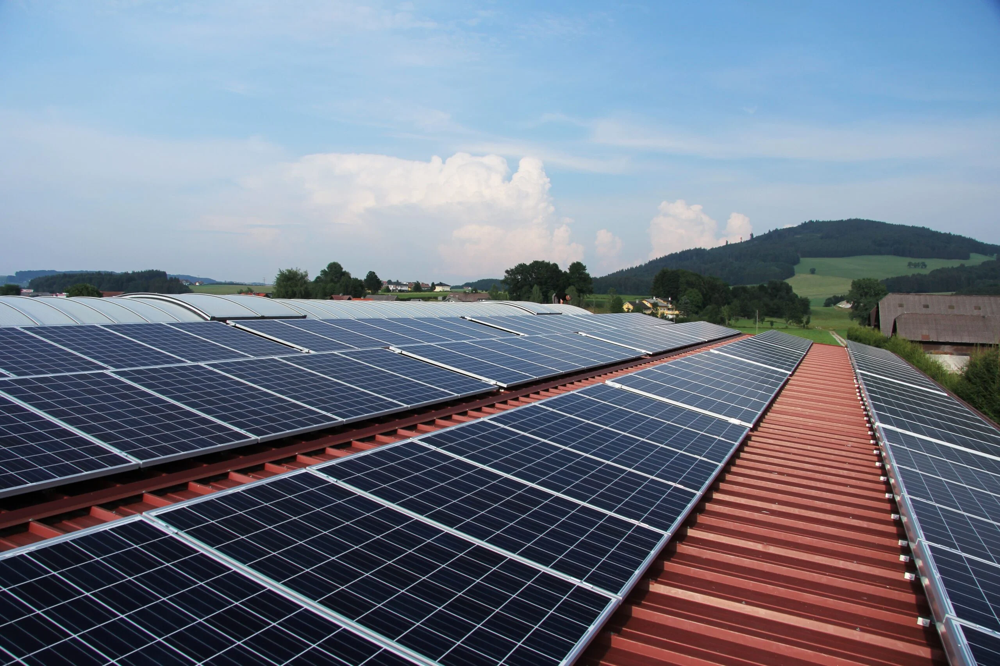
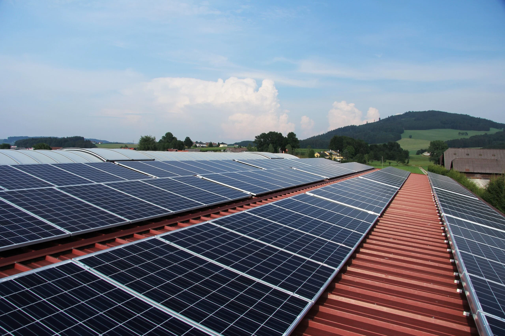

1990–2000: Eficiencia y expansión comercial
Esta década vio avances clave en eficiencia y diversificación de aplicaciones. En 1992, el Instituto Fraunhofer alcanzó un 24% de eficiencia en células de silicio, mientras que las células de telururo de cadmio (CdTe) superaron el 15%. Los paneles comenzaron a integrarse en infraestructuras, como el techo solar del Magdeburg Cathedral en Alemania (1990). También surgieron tecnologías innovadoras, como las células dye-sensitized (1991), más económicas pero menos eficientes. La década cerró con hitos como el primer vuelo transatlántico de un avión solar (Solar Impulse, 1999) y el establecimiento de programas gubernamentales para incentivar la energía renovable


 
